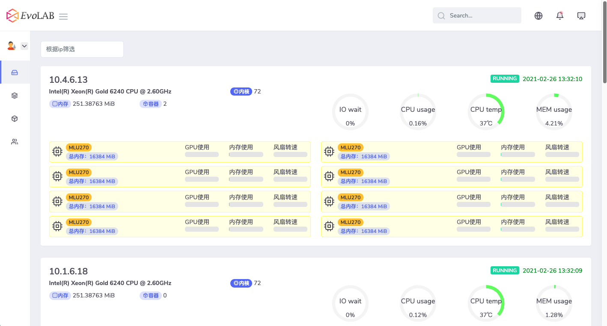
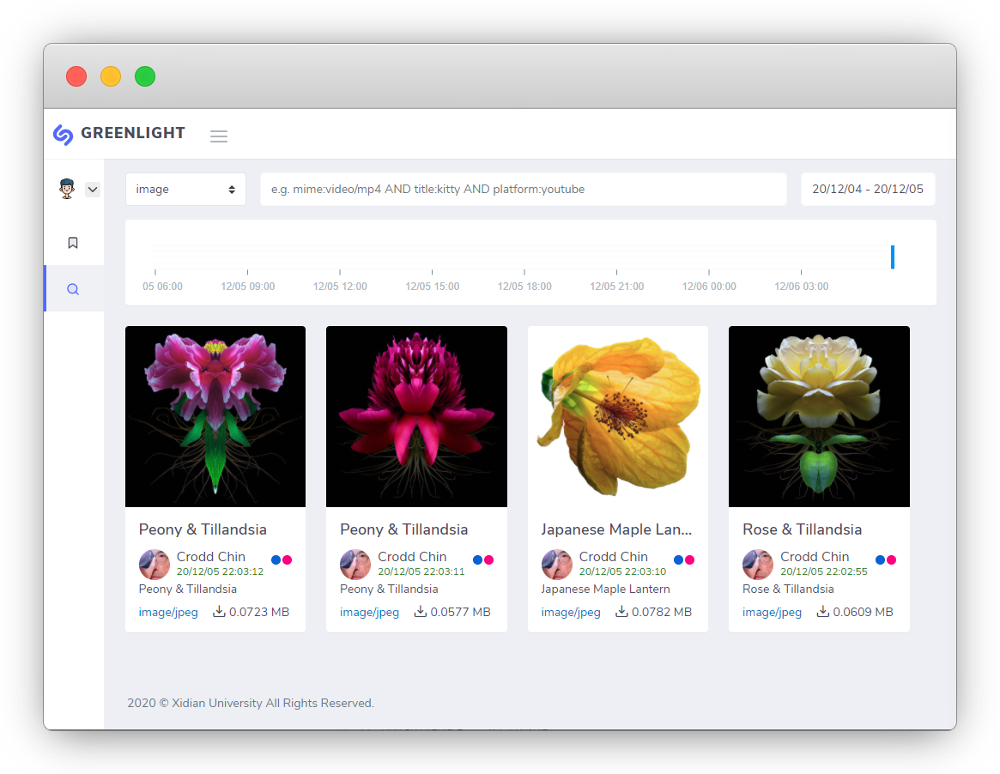
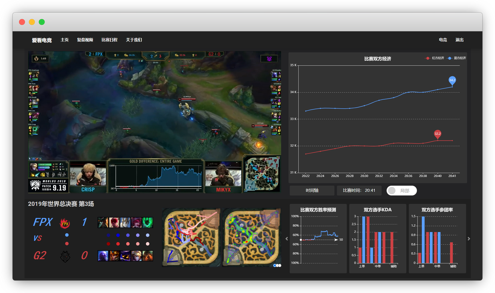

DvcLAB
All our knowledge has its origins in our perceptions.
—— Leonardo da Vinci
PsiAI
以开发者为中心的云端协作实验室集合最新文献、开源算法、开放数据、编程环境的线上一站式开发平台
GreenLight
基于加密隧道的数据采集系统为PsiAI提供最新文献与可靠数据，文本、图像、视频自动并行采集存储系统
AI看电竞
基于Web的电竞数据实时可视化网站一款为电竞爱好者提供电竞战队比赛数据可视化网站，利用人工智能算法综合数据，实现对比赛进行结果预测
DvcLAB
团队主要研究方向有 图像处理、大数据、AI与loT 我们是一群有梦想、有目标的年轻人 在导师的带领下不忘初心，砥砺前行 欢迎志同道合的优秀开发者参与我们 一起交流，共同进步